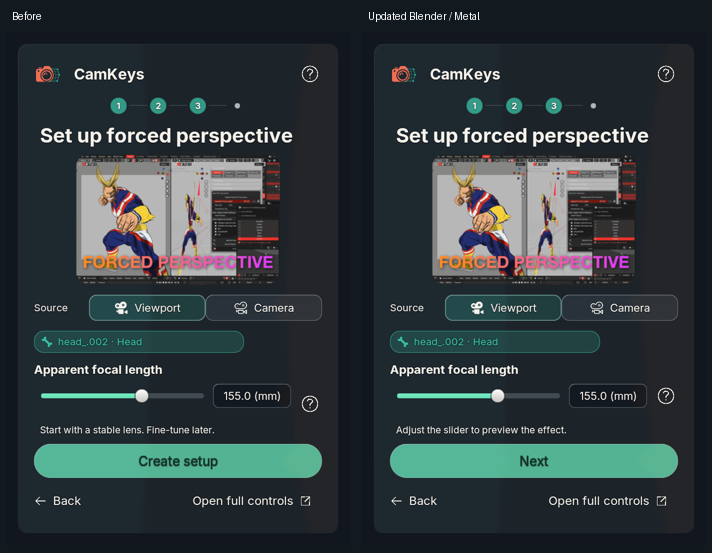
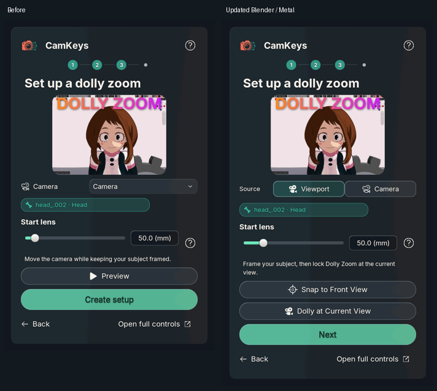

2026-11-03 · Overview and estimate · Approved design comparison
Forced Perspective is prepared before its configuration step, with a real effect-property slider. Untouched distance defaults initialize around the current view; authored ranges are preserved. Back/Next keeps edits and avoids duplicate modifiers.
Dolly starts in Viewport mode. Camera mode exposes the camera picker. Snap to Front View fits local +Y front bounds to approximately 75% of the selected view. Dolly at Current View captures or recaptures in place. The starting-lens field is locked while the solver owns it. Help remains at the question-mark button.
136 setup/help messages audited across 12 languages. Actual 5.1.2 and 5.2.2 tests cover real BUI bindings, evaluated geometry, viewport/camera locks, shifted portrait framing and constrained-camera rejection. Source icon and rounded button styles are retained. No version bumps.
These are actual BUI/Metal component captures using the saved Uraraka bindings and a controlled glass backdrop, not live-sidebar screenshots. Changes in scene names, workflow content and height are intentional. Physical Windows and Blender 4.2 execution of this new flow remain user QA. Stage GIF shows snapshots, not a continuous interaction recording.


5.2.2 execution · 5.1.2 execution · Locales · GPU capture evidence